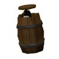
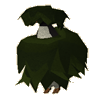
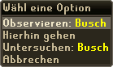

")
Pinguin-Überwachung
Nur RuneScape-Mitglieder können Pinguin-Überwachung spielen. Bitte werdet Mitglied, damit ihr auf dieses Feature zugreifen könnt.
Einführung

Doch Larry weiß, dass die Personen, die für die Pinguine Partei ergreifen, nur Agenten des bösen Pinguin-Geheimdiensts KGP sind. Ihn packt eine potenziell plausible Pinguin-Paranoia.
Jetzt seid ihr dran! Helft Larry, helft den guten, aufrechten Bürgern von RuneScape. Profiliert euch als Putschist der proletarischen Pinguin-Posse. Larry braucht euch!
Voraussetzungen
Um nach Pinguin-Spionen zu suchen, braucht man eigentlich keine bestimmten Voraussetzungen. Da sie auf ganz RuneScape zu finden sind, müsst ihr aber Abenteuer wie 'Der unterirdische Pass' abgeschlossen haben, um alle Gebiete zu erreichen, die sie infiltriert haben.
Erste Schritte

Da es immer nur zehn Spione gleichzeitig gibt, die sich noch dazu laufend bewegen, solltet ihr am besten versuchen, sie während eurer normalen Aktivitäten zu entdecken, oder mit Freunden zusammenarbeiten, um sie ausfindig zu machen. Wenn ihr alleine die Verfolgung aufnehmt, ist die Aufgabe um einiges schwieriger.
Als wären die ewigen Manöver und das Einwechseln der Pinguin-'Maulwürfe' (das ist Geheimdienst-Umgangssprache für 'Spion') nicht genug, sind die KGP-Agenten auch noch mit einer der Umgebung angepassten Tarnung ausgestattet. Diese Verkleidung ist nahezu perfekt. Man kann die Spione daher nur entlarven, wenn sie sich bewegen.
Das Federtier-Beobachtungs-Institut (FBI) hat das folgende Dossier über Pinguin-Verkleidungen angelegt:
|
 Fass |
 Busch |
 Kaktus |
 Holzcontainer |
 Felsbrocken |
 Giftpilz |
 Wenn ihr also meint, ihr habt einen der penetranten Pinguin-Partisanen entdeckt, rechtsklickt ihn einfach und wählt 'Observieren' aus. Dadurch wird der Aufenthaltsort des Spions notiert und ihr könnt Larry über seine zweifelhaften Aktivitäten berichten.
Wenn ihr nicht mehr weiter kommt, könnt ihr euch von Larry ein paar Tipps holen. Er hat ein weitreichendes Netzwerk von Agenten (oder Leuten, die nebenbei erwähnen, dass sie einen Pinguin gesichtet haben) und hört viele Gerüchte. Solltet ihr gerade nicht in seiner Nähe sein, könnt ihr ihn über den 'Telepathie'-Zauberspruch aus dem Mond-Zauberbuch erreichen. Zum stilgerechten Spionieren wird Larry euch die 'Akte Pinguin' anvertrauen, in der ihr die Informationen, die ihr sammelt, festhalten könnt.
Eisbär-Agenten
 Sobald ihr 'Jagd auf Roter Raktuber' abgeschlossen habt, wird Larry durch Chuck ersetzt, einem Agenten des VEB. Außer den üblichen Pinguin-Überwachungsaufträgen wird er euch bitten, einen seiner Agenten zu überwachen. Da Eisbären viel größer sind als Pinguine und sich nicht so einfach verkleiden können, müssen sie sich in Brunnen verstecken. Jede Woche wechseln Chucks Agenten ihre Position und ihr müsst Chuck regelmäßig Lageberichte erstatten.
Sobald ihr 'Jagd auf Roter Raktuber' abgeschlossen habt, wird Larry durch Chuck ersetzt, einem Agenten des VEB. Außer den üblichen Pinguin-Überwachungsaufträgen wird er euch bitten, einen seiner Agenten zu überwachen. Da Eisbären viel größer sind als Pinguine und sich nicht so einfach verkleiden können, müssen sie sich in Brunnen verstecken. Jede Woche wechseln Chucks Agenten ihre Position und ihr müsst Chuck regelmäßig Lageberichte erstatten.
Belohnungen
Wenn ihr die gefährlichen, kriminellen Subjekte im Auge behaltet, bekommt ihr - neben dem guten Gefühl, einen wertvollen Beitrag für die Gemeinschaft geleistet zu haben - auch noch Bargeld oder Erfahrung für eure Informationen. Larry (oder Chuck) hat einen Überblick über die Pinguin-Punkte, die ihr sammelt, und bietet euch sogar noch mehr an, wenn ihr nach Abschluss des Abenteuers Kalter Krieg und Jagd auf Roter Raktuber sein Vertrauen errungen habt.
Da die Hälfte der Pinguin-Spione sich an relativ leicht zu erreichenden Orten aufhält, bekommt ihr 1 Punkt für ihre Entlarvung. Pinguine in entlegenen Gegenden sind ebenfalls 1 Pinguin-Punkt wert - außer Larry vertraut euch, dann bekommt ihr für entlegene Agenten 2.
Pinguin-Punkte können entweder gegen 6.500 Goldmünzen pro Punkt eingetauscht werden oder gegen Erfahrung in einer Fertigkeit eurer Wahl.
Ihr könnt pro Woche maximal 16 Pinguin-Punkte verdienen, wenn ihr alle Pinguin-Abenteuer abgeschlossen habt. Larry (oder Chuck) behält den Überblick über eure Pinguin-Punkte bis ihr 50 erreicht habt, sodass ihr euch gut überlegen könnt, wofür ihr sie ausgeben wollt.
Entwicklung
Entwicklung: Nancy J
Grafik: Kavi M, Alex R, Mark C, Daniel J
Qualitätssicherung: Ben L, Dan G, Dan O'R
Audio: Grace D

Weitere Artikel in Spaß für zwischendurch
|
|
|
Weiterführende Informationen Wenn euch dieser Artikel nicht weitergeholfen hat, könnt ihr in den folgenden Kapiteln der RuneScape-Webseite mehr Informationen finden:
|
|